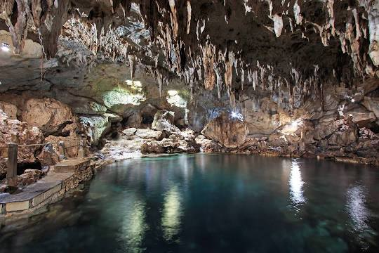
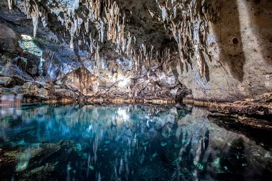
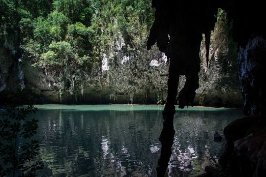
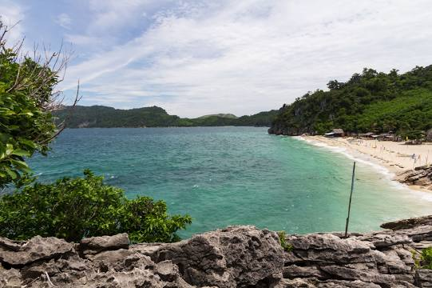
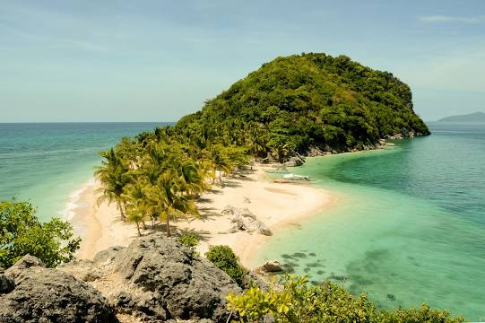
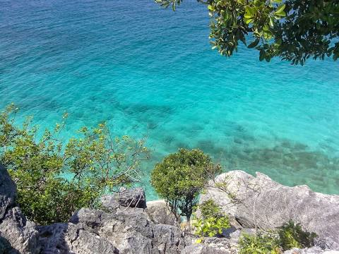

Magellan's Cross Pavilion is a stone kiosk in Cebu City, Philippines. The structure is situated on Plaza Sugbo beside the Basilica del Santo Niño It houses a Christian cross that was planted by explorers of the Spanish expedition of the first circumnavigation of the world, led by Ferdinand Magellan, upon arriving in Cebu in the Philippines on April 21, 1521. Along with the Basilica del Santo Niño's church and convent buildings, the pavilion is a declared National Cultural Treasure of the Philippines.
Hinagdanan Cave



Hinagdanan Cave is a cave in the municipality of Dauis on Panglao Island, in Bohol Province, in the Philippines. It is a naturally lighted cavern with a deep lagoon and many large stalactites and stalagmites. The cave is lit by sunlight which filters through holes in the ceiling. The underground lake is a popular swimming spot, but it has been known to test for high levels of various pollutants, since it is fed by ground runoff. Hinagdanan Cave is made of limestone. Its entrance is a hole about 1 metre in diameter, visible from a limestone hill. Cement steps lead to the interior. The cave is slippery, but there's a rope railing to hold on to. The cave is filled with sleeping birds in small holes in the ceiling. The sunlight that enters the cave make it iunsuitable for bats. Hinagdanan Cave was accidentally discovered when the area's owner was clearing decaying branches. He threw a stone into the hole and heard a splash. After building a ladder to enter the cave, be named it Hinagdanan. The cave is about 100 metres long, with many beautiful stalagmite and stalactite rock formations. There is a lagoon with a green hue produced by the green limestone at its bottom. later political rallies, including those of Ferdinand Marcos and Corazon Aquino, the latter having culminated in the EDSA Revolution in 1986.
Islas de Gigantes



Islas de Gigantes is an island chain within the larger Western Visayas archipelago in the Visayan Sea. It is part of the municipality of Carles, Iloilo, Philippines, and the northernmost part of Iloilo province. The Gigantes islands consist of about ten islands; the two largest are Gigantes Norte and Gigantes Sur. According to the 2010 census, it has a population of 12,224. There is also a lighthouse on Gigantes Norte.